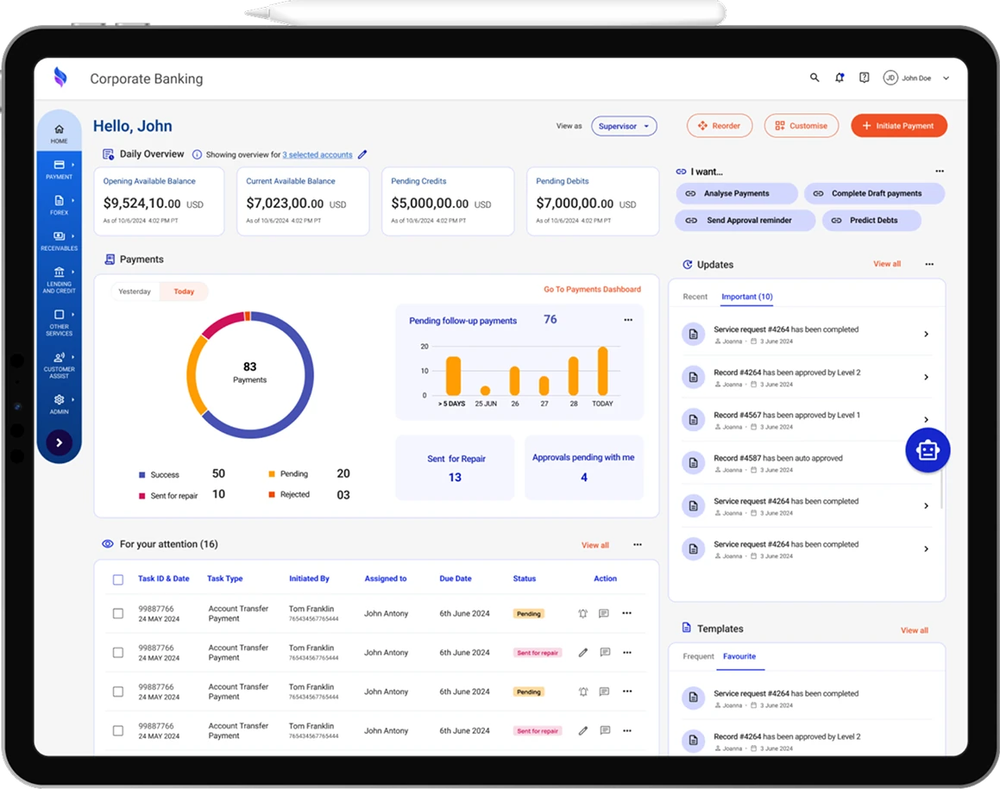
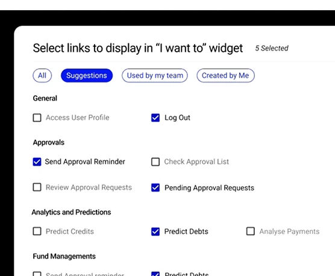
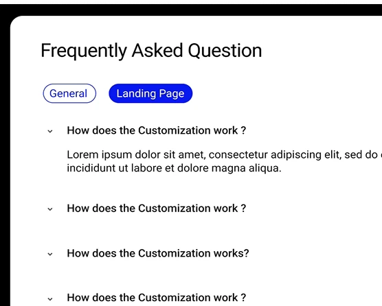
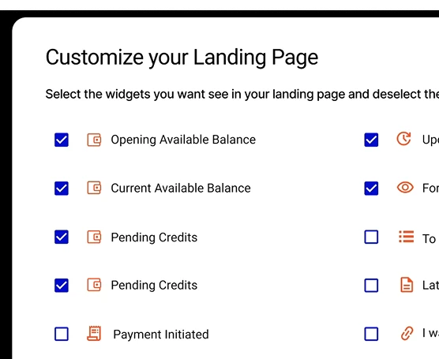

B2B Fintech · Corporate banking
Scaling an enterprise banking platform to a new segment.
- Problem
- A role structure built for 300+ employee enterprises forces friction on companies of 100 employees or fewer.
- My role
- UX designer. Ran the stakeholder research and turned it into the interaction model.
- Result
- A hybrid onboarding: automatic role capture for small companies, explicit role selection for enterprises. The stakeholders confirmed it fit how their client organisations work.

Screens recreated. The original work is under NDA.
One person. Three roles. One afternoon.
A finance manager at a company with under 100 employees logs into a banking platform built for enterprises with 300+. Before she can see anything, it asks her to choose a role: author, reviewer or approver. This afternoon, she's all three.
Choose your role
Select a role to continue. You can switch roles from your profile.
Enterprise role separation, forced on a small team.
The platform assumed the front office, mid office and back office were different people. An author drafts, a separate reviewer approves, and a back-office team tracks the life cycle. At a company of 100 or fewer, those roles fall to the same two or three people. Forcing enterprise role separation on them meant friction at onboarding, extra navigation, and dashboards showing every role's tasks at once.
Stakeholders described the same pattern across their client organisations: small-business finance staff stretched thin between running the business and managing its money.
Where the pattern came from
We ran stakeholder sessions where we mapped who in a 300+ employee company did each task, then asked who does the same work at 100 employees or fewer. My job was turning that into an interaction model we could ship.
Front office
Mid office
- Limit policy
- Approval policy
- Exception policy
Back office
Business management
- Effective and efficient business management
- What-if analysis
- Risk management: FX, interest rate, equity, liquidity and operational risk
- Portfolio management: channel, product and investment mix
- Cost management
- Visibility and visualisation of the banking relationship
- Forecasting, such as cash flow
How much role structure should the interface impose?
The design team explored three low-fidelity flow concepts. Each answered that question differently.
Explicit selection
- Log in
- Pick a role
- Role landing page
- Dashboard
- Clearest
- Most friction
Kept for enterprises
Automatic capture
- Log in
- Role inferred from profile
- Dashboard is the landing page
- Least friction
- Unclear when one person holds several roles
Used for 100 or fewer
Task-first landing
- Log in
- Role-specific tasks
- Task pages
- Dashboard
- Efficient with one role
- Noisy with several
Not taken forward
Arguing against the cheap option
The cheap option was to ship Concept 1 everywhere: one onboarding flow that reused the existing enterprise logic. I argued against it because it put friction at the point where adoption mattered most: the first time a small company's finance manager opens the platform.
I proposed a hybrid instead. Companies with 100 employees or fewer get Concept 2's automatic role capture, and enterprises keep Concept 1's explicit selection. Concept 3 worked well for finding tasks but didn't solve the role-ambiguity problem, so we didn't take it forward.
The hybrid meant two onboarding paths instead of one, which brought more conditional logic to spec and harder QA across both flows. We also had to change how the legacy role-based permissions worked, because they assumed role selection came before everything else.
What I cut
An early direction let business managers on the enterprise side reassign tasks freely across roles, instead of using a fixed two-path split. I scoped it down to the two-path hybrid. The legacy permissions couldn't support reassigning roles on the fly within six months, and the fixed split solved the SME problem in scope without that rebuild.
A working surface that fits the person, not the org chart.
Hybrid onboarding
Small companies skip role selection, and the platform configures itself from the organisation's profile and team size. Enterprises keep explicit role selection, along with the role separation they often need for compliance.
Adaptive dashboard widgets
Widget density changes with the company profile, so someone holding several roles doesn't see every role's tasks at once.
100 or fewer: fewer, combined widgets
300+: full, role-specific widgets
Configurable quick links, landing page and FAQs
Users build their own "I want to" shortcuts. One person holding three roles gets a working surface that fits them, instead of a role-based menu.
Each organisation can switch landing-page sections and FAQs on or off. Small companies see less irrelevant content, and enterprise users keep what they need.
-
1
Customise quick links to fit each user

-
2
Easy to find, categorised FAQs

-
3
Make the dashboard fit your taste

Designing inside an enterprise banking system.
- Legacy technology limited how far we could restructure flows, and we adjusted several concepts to fit what the existing architecture could support.
- Data protection rules limited which data could appear together on one dashboard view. That shaped the widget design and what an overview could contain.
- Information density was the constant tension: an overview useful to someone holding several roles risks overloading them. I relied on cognitive-load principles from my MSc in HCI to make grouping and progressive-disclosure decisions, instead of deciding by taste.
- Accessibility was handled informally, through contrast and readability checks on dashboard components. There was no formal WCAG audit.
How we validated it.
We ran moderated walkthroughs with the client's 3 stakeholders, comparing the three concepts against the current platform for navigation friction, clarity of role handling and fit across company sizes. The stakeholders confirmed the hybrid matched how their client organisations work.
We had no direct access to end users at this stage, so there was no end-user testing or quantitative split test.
By the numbers, and what I'd do differently.
What I'd do differently
I'd push to watch one SME user who holds all three roles complete a real task, from drafting through review to approval, in a single sitting. Instead, we relied on stakeholders' descriptions of that moment. The whole hybrid rests on that assumption, and no real user holding all three roles ever tested it.
I'd also schedule a formal accessibility audit earlier, because informal contrast checks are least reliable on data-dense financial screens like these.